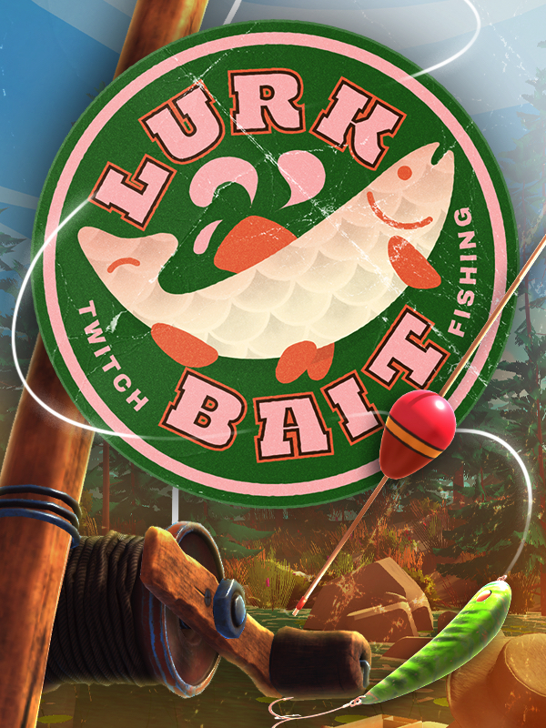

LurkBait Twitch Fishing
LurkBait Twitch Fishing
Details
|  | |
| Playtime | 19h 59m 0s |
| Last Activity | 2025-04-08 0:01:33 |
| Added | 2024-06-27 18:32:43 |
| Modified | 2024-06-27 18:32:57 |
| Completion Status | Played |
| Library | Steam |
| Source | Steam |
| Platform | PC (Windows) |
| Release Date | 2024-02-22 |
| Community Score | |
| Critic Score | |
| User Score | |
| Genre | Indie Simulator Sport |
| Developer | |
| Publisher | |
| Feature | Single Player |
| Links | Steam Discord |
| Tag | |
Description
A Twitch-powered interactive cozy fishing game for your viewers. Every game needs a fishing minigame, now your stream can have one too!
Add as an overlay for your stream and let your viewers fish with commands, points, bits or subs. Boost viewer engagement and reel in the lurkers with a fun interactive game that runs itself — while you focus on your content.

Check out the demo to test LurkBait to see how it integrates with your stream, and how it impacts performance. However in the demo version, only the streamer can cast and catch fish.

This game features catchable objects that reference drug and alcohol consumption, this might not be suitable for all family friendly streams.
Add as an overlay for your stream and let your viewers fish with commands, points, bits or subs. Boost viewer engagement and reel in the lurkers with a fun interactive game that runs itself — while you focus on your content.
Key features
- Supports triggering a cast with chat commands, channel points, bits, subs and gifted subs or a combination of all 5 triggers
- Easy and convenient Twitch login, authentication is stored locally with no additional signups or fees
- All casts are automatically queued, so nobody misses out on their chance to fish
- Four weather options to change the vibe
- Create custom catches with your own images, choose their value and their rarity will automatically be calculated
- Automatic performance scaling when you're running intense games to keep things running as smooth as possible
- Pause queue button, useful when you're trying to wrap up stream
- Allow viewers to display the leaderboard and the fish dex with commands
- Allow streamers and mods to manually cast on behalf of a viewer with a command
- A help command is automatically created that lists your specific cast triggers for viewers
- Optional stats command so viewers can check their gold, leaderboard position and total catches
- Convenient mute button for when you need to focus on your game
Check out the demo to test LurkBait to see how it integrates with your stream, and how it impacts performance. However in the demo version, only the streamer can cast and catch fish.
Customization options
- Customize all commands and the global command prefix, including the cast, leaderboard, dex and help command
- Choose your own channel point redeem name
- Choose to hide the game when not in use, or to remain visible with the auto-hide toggle
- Customize commands and command prefixes
- Choose minimum bits and allow multiple casts
- Create timeouts for cast, leaderboard and dex commands
- Cast delay option to not interfere with your alerts
- Optionally boost the chances of catching ultra-rare fish so they appear more frequently
- Graphics quality settings and resolution
- Transparent window or chroma-key option
- Game volume
IMPORTANT
This is a game purely intended for Twitch streamers, if you aren't a Twitch streamer, this probably isn't for you!This game features catchable objects that reference drug and alcohol consumption, this might not be suitable for all family friendly streams.